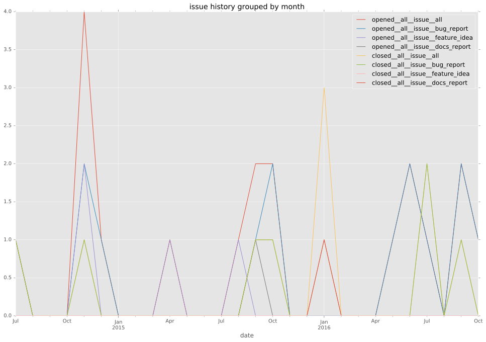
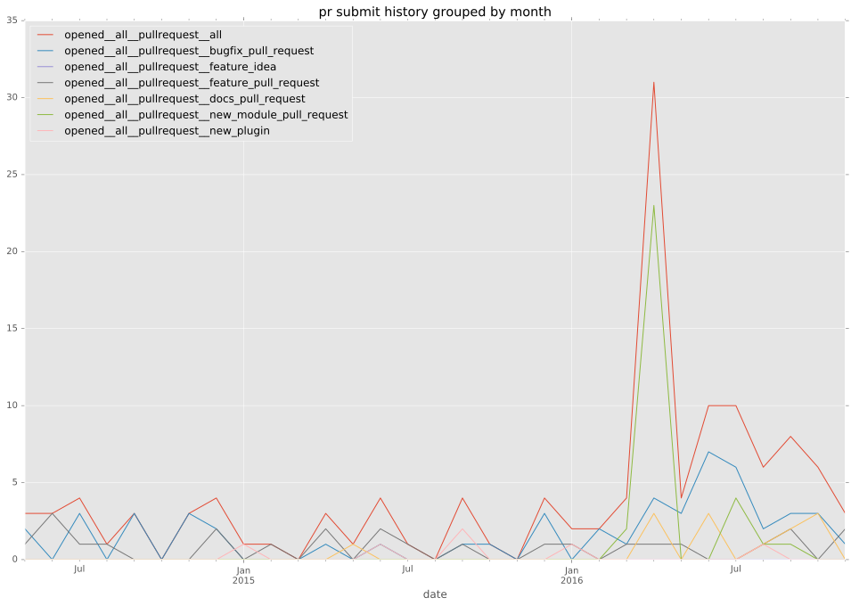
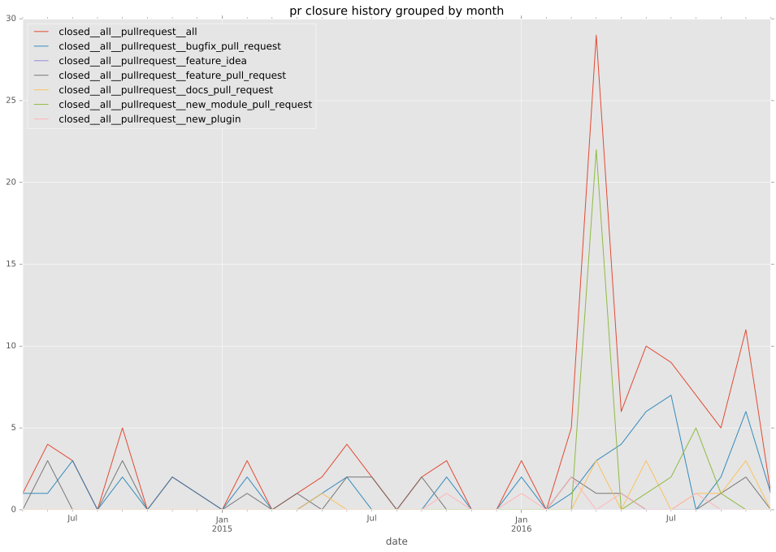

authors
- jwhitbeck
maintainers
- ansible
contributors
- jwhitbeck : 48 commits
- matlockx : 33 commits
- abadger : 17 commits
- jimi-c : 11 commits
- chrismeyersfsu : 11 commits
- lander2k2 : 8 commits
- matiasdecarli : 6 commits
- ranjan : 4 commits
- pborreli : 4 commits
- jlaska : 4 commits
- moutai : 3 commits
- smereczynski : 2 commits
- gundalow : 2 commits
- tksarah : 1 commits
- mscherer : 1 commits
- kanwei : 1 commits
total issue counts
unknown: 4
feature pull request: 20
docs report: 3
pullrequest: 116
docs pull request: 12
bugfix pull request: 42
feature idea: 5
issue: 21
new plugin: 38
bug report: 13
issue history

pullrequest history


days open by issue type
bugfix pull request
count: 63
std: 40.7309054211
min: 0
max: 266
median: 0.0
mean: 16.1587301587
all
count: 184
std: 58.1886864432
min: 0
max: 422
median: 4.0
mean: 24.4836956522
pullrequest
count: 0
std: nan
min: nan
max: nan
median: nan
mean: nan
docs pull request
count: 19
std: 8.86480655861
min: 0
max: 24
median: 0.0
mean: 5.15789473684
docs report
count: 1
std: nan
min: 125
max: 125
median: 125.0
mean: 125.0
feature pull request
count: 31
std: 61.9371689959
min: 0
max: 218
median: 2.0
mean: 38.2903225806
feature idea
count: 1
std: nan
min: 422
max: 422
median: 422.0
mean: 422.0
issue
count: 0
std: nan
min: nan
max: nan
median: nan
mean: nan
new plugin
count: 55
std: 61.2848293057
min: 0
max: 348
median: 6.0
mean: 27.9454545455
bug report
count: 11
std: 27.3326311809
min: 0
max: 92
median: 0.0
mean: 10.4545454545
closures grouped by total days open